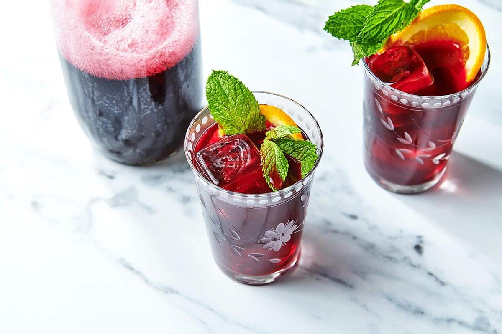

45 degrees in the Old Town of Rhodes. We are tourists, of course we are out and about when we probably shouldn't be. It's August. The radiation is starting to get to us. Ducking into the nearest room with AC cools the body down, sure, but after a few days of exposing ourselves to the heat, as if AC can fix the cooking that's happening inside.
As we walk into the lobby of our hotel, Kokkini Porta Rossa, the kind family that runs the joint hands us a cold tall glass of some unkown, iced, rose colored substance. "Have some" they say with a smile, "It'll help...it's hot out there!". We take a sip, lock eyes, and smile. Holy shit, this stuff is good, it hits the spot.
A family recipe, Hibiscus Tea. We liked it so much that we started looking forward to returning to the hotel every day. Almost more than we looked forward to the sight seeing we would do, or the beach we would be at. Some days, we silently thought about how majestic that refreshing drink will be once we got home. I wouldn't mind if we skipped that museum...That stuff is only a few hundred years old anyway.
We drank that stuff so much that eventually the family gave us a small cutout of the recipe. We still make it to this day.